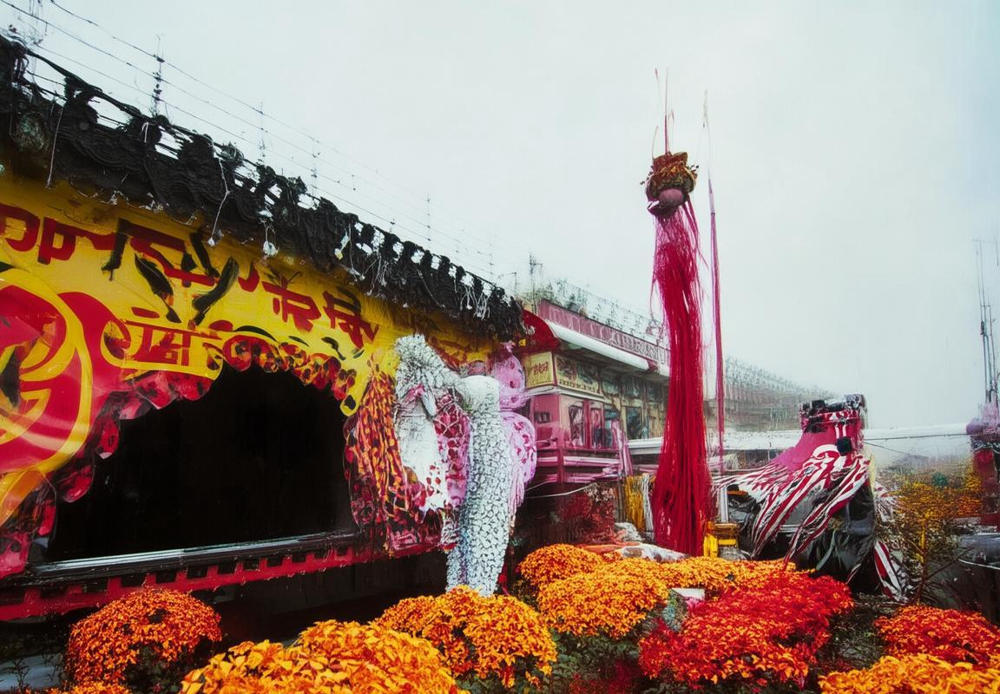

文言文，那些承载着古人心声的文字，仿佛穿越千年的风尘，依旧熠熠生辉。在科技日新月异的今天，DeepL翻译这样的技术，为我们搭建了一座沟通古今的桥梁。它不仅让我们能够读懂那些深奥的文言篇章，更让我们感受到古人的智慧与情感。下面，我们就来揭开DeepL翻译文言文的神秘面纱，一探究竟。
穿越时空的对话
信息高速流转的今天，我们似乎与古人隔了一层无形的墙。然而，DeepL翻译文言文的能力，就像一座桥梁，让我们得以跨越时间的长河，与古人进行一场穿越时空的对话。
想象一下，你手捧一本古老的书籍，那些密密麻麻的文言文，对你来说如同天书。而现在，有了DeepL，这一切都变得简单。它就像一位精通古文的智者，能够将那些尘封的文字，一一转化为现代汉语，让你轻松读懂古人的心声。
文言文，那些承载着中华文明厚重历史的文字，曾一度远离我们的视线。但DeepL的出现，让古文不再遥不可及。它通过强大的算法，不仅翻译了字面意思，还试图捕捉文言文的韵味和情感，让我们感受到古人的智慧和情感。
比如说，你读到了一首唐诗：“独在异乡为异客，每逢佳节倍思亲。”DeepL翻译后，你可能会看到：“远离家乡成了他乡客，每到节日思念更浓。”这样的翻译，既保留了原诗的意境，又让现代人能够感同身受。
DeepL翻译文言文的秘诀，在于它背后的深度学习技术。它通过大量的古文资料，学习文言文的语法结构、词汇含义，甚至文化背景。这样，当面对一篇文言文时，它能够像人类一样，理解上下文，进行准确的翻译。
当然，DeepL翻译文言文也面临着挑战。文言文表达方式独特，有时一个字就能蕴含深厚的意义。DeepL需要准确把握这些细节，才能给出贴近原文的翻译。而在这个过程中，它也不断进化，变得更加精准。
我们不妨再来看一个例子。古文中的“青青子衿，悠悠我心”，用DeepL翻译，可能会变成：“青色的衣领，我的心情悠长。”这样的翻译，既传达了原句的意境，又让现代读者能够理解。
文言文翻译的意义，不仅仅在于让现代人读懂古文，更在于让我们了解古代的文化、思想和生活方式。通过DeepL，我们可以更加直观地感受到古代文人的情感世界，体会到他们的忧愁、快乐和理想。
DeepL翻译文言文，就像是一把钥匙，打开了古代文明的大门。它让我们不再局限于现代生活的框架，而是可以自由地穿梭于古今之间，体验不同的文化氛围。
这个数字化的时代，DeepL翻译文言文的能力，不仅是对古代文化的传承，更是对人类智慧的致敬。它让我们相信，无论时间如何流转，文明的火花永远不会熄灭。
随着技术的不断进步，我们有理由期待，DeepL翻译文言文的能力将更加出色。而我们也应该珍惜这样的机会，去了解那些古老的文字，去感受那些跨越时空的情感。因为，这正是DeepL带给我们的一场穿越时空的对话。
DeepL翻译的魅力
当今这个信息爆炸的时代，DeepL翻译这款工具的出现，仿佛为人们打开了一扇通往不同语言的窗户。它不仅仅是一个翻译工具，更是一种连接不同文化和思维的桥梁。下面，我们就来聊聊DeepL翻译的魅力。
DeepL翻译的魅力在于它能够把复杂的文言文翻译成我们日常使用的现代语言。比如，你手里捧着一本古老的文言文书籍，里面记载着古人的人生哲学。以往，你可能需要查阅字典，翻阅注释，才能勉强理解其中含义。但现在，有了DeepL，这一切都变得简单了。
它的翻译准确度令人印象深刻。举个例子，文言文中的“青天白日”在现代汉语中通常理解为“天空湛蓝，阳光明媚”，但DeepL翻译可能会给出“这天空真蓝，太阳真亮”这样的直白表达。这样的翻译，既保留了原句的意境，又让现代人能迅速领会古人的感慨。
DeepL的强大之处还体现在它对语境的理解上。文言文中许多成语、典故和比喻，如果没有正确的语境支撑，很难准确翻译。但DeepL能根据上下文，选择最合适的现代汉语表达。比如，“画蛇添足”在文言文中是“画蛇而足”，DeepL就能翻译成“画蛇多加一笔”，既贴切又生动。
DeepL翻译的流畅性也是一大亮点。它不像某些翻译工具那样，生硬地将文言文逐字逐句翻译成现代汉语，而是能够根据句子结构进行调整，让翻译后的句子读起来自然、顺口。比如，“昔人已乘黄鹤去，此地空余黄鹤楼”，DeepL可能会翻译为“古人乘着黄鹤飞走了，这里只留下了黄鹤楼”，这样的翻译让人感觉就像是在读一首现代诗。
DeepL翻译的魅力还在于它的人性化。它能够识别出一些常见的文化差异，比如在某些翻译中会添加注释，解释一些可能对现代人不太熟悉的历史背景或文化习俗。这使得翻译不仅仅是一种语言的转换，更是一种文化的交流。
当然，任何工具都有它的局限性。DeepL翻译在处理一些非常古旧的文献时，可能还是会有一些挑战。但总体来说，它已经是一个非常强大和实用的翻译工具。
这个快节奏的社会，我们常常需要快速获取信息。DeepL翻译的出现，让我们能够轻松跨越语言障碍，去接触和理解那些原本遥不可及的知识。无论是学习古代文献，还是了解异国文化，DeepL都成为了我们不可或缺的助手。
DeepL翻译的魅力在于它的高效、准确和人性化。它不仅让语言之间的交流变得更加便捷，更让文化的交流和理解变得更加可能。在这个多元化的世界，DeepL翻译无疑是一个连接不同文化的桥梁，让我们能够更加宽广地看待世界。

实例分析：古文新译
古文新译，如同打开一扇通往历史深处的窗。它不仅仅是语言的转换，更是一种文化的传承与新生。下面，我们就来通过几个实例，看看古文是如何被赋予新生的。
唐诗的韵味
以唐代诗人李白的《静夜思》为例，这首诗简短精炼，意境深远。原文如下：
床前明月光，疑是地上霜。举头望明月，低头思故乡。
用DeepL翻译成现代汉语，它可能会这样翻译：
我床前的月光很亮，我怀疑那是地上的霜。我抬头看着那轮明月，我低头思念着远方的家乡。
这样的翻译保留了原诗的意境，让现代人能够轻松理解古人的情感。
宋词的细腻
再来看宋代词人辛弃疾的《青玉案·元夕》：
东风夜放花千树，更吹落、星如雨。宝马雕车香满路，凤箫声动，玉壶光转，一夜鱼龙舞。
DeepL翻译成现代汉语，可能会这样表达：
春风吹开了满树的花朵，星星像雨点一样落下来。豪华的马车香气四溢，凤箫的声音动人心弦，玉壶的光芒流转，整夜都是鱼龙舞动的景象。
这种翻译不仅传达了词人的情感，还让现代读者能够感受到宋词的细腻与精致。
文言文的幽默
文言文中也不乏幽默，比如明代小说《西游记》中的对话。孙悟空与唐僧的一段对话：
悟空道：“师父，你为何这等忧愁？”唐僧道：“悟空，我心中有事，难以启齿。”
DeepL翻译成现代汉语，可能会这样处理：
悟空说：“师傅，你怎么这么愁眉苦脸的？”唐僧说：“悟空，我心里有事，说不出口。”
这种翻译保留了对话的幽默感，让读者在阅读古文时也能感受到轻松愉快。
古文新译的挑战
古文新译并非易事，它需要翻译者对古文有深刻的理解，同时还要具备现代汉语的表达能力。在这个过程中，翻译者需要克服以下几个挑战：
- 词汇差异：古文中的许多词汇在现代汉语中已经不再使用，需要翻译者寻找合适的现代词汇来替代。
- 语法结构：古文的语法结构与现代汉语有所不同，翻译时需要调整语序，使句子符合现代汉语的语法规则。
- 文化背景：古文往往蕴含着丰富的文化背景，翻译时需要考虑到这些文化元素，使翻译结果更加贴近原意。
古文新译的意义
尽管古文新译面临诸多挑战，但它对于传承和弘扬中华优秀传统文化具有重要意义。通过新译，古文不再是遥不可及的，而是能够走进现代人的生活，让更多人了解和喜爱传统文化。
古文新译，如同给古文穿上现代的外衣，让它焕发出新的生机。在这个过程中，我们不仅能够感受到古人的智慧，还能体会到翻译者的匠心独运。未来，随着翻译技术的不断进步，我们有理由相信，古文将会以更加生动的方式展现在世人面前。

技术解析：DeepL如何翻译文言文
DeepL翻译文言文的技术解析，得从几个关键点说起。这就像给古文穿上现代的外衣，让它变得鲜活起来。
你看，文言文这东西，它不是简单的字面意思，它背后藏着的是深厚的文化底蕴和丰富的情感。DeepL翻译要搞定这事儿，得有几下子。
得有个强大的数据库。DeepL得把古今中外的文献都翻个遍，把文言文的词汇、语法、用法都记牢。这样，翻译的时候才能对得上号，不跑偏。
算法得聪明。DeepL用的不是那种死板的翻译，它得能理解文言文的意思，知道它在说什么。这就得用到深度学习的技术了。深度学习就像个聪明的脑袋，它能从大量的数据中找出规律，理解文言文的内在逻辑。
举个例子，文言文里的“矣”字，它有时候是句末的语气词，有时候又表示肯定。DeepL得能分辨出来，不能简单地把它翻译成“了”或者“啊”。
再说，DeepL得懂得文化差异。文言文里有很多成语、典故，这些玩意儿在现代汉语里可能有不同的解释。DeepL翻译的时候，得考虑到这些文化背景，不能翻译成现代汉语的字面意思，得翻译成现代汉语里能让人理解的意思。
比如，“春风得意马蹄疾”，这句话里的“春风得意”在现代汉语里指的是心情舒畅，而不是字面意义上的春天来了。DeepL得能翻译出这个意思，不然就闹笑话了。
还有，DeepL得能处理文言文的古文风格。文言文讲究意境，有时候一个字就能表达很深的情感。DeepL翻译的时候，得尽量保留这种意境，不能把文言文翻译成干巴巴的现代汉语。
比如，“独在异乡为异客，每逢佳节倍思亲”，这句话里的“独在异乡”和“倍思亲”都很有意境。DeepL翻译的时候，得尽量传达出这种感觉，不能只是简单地说“我独自在异乡，每逢佳节特别想家”。
DeepL翻译文言文的技术，就是靠这个强大的数据库、聪明的算法和对文化差异的敏感。它不仅要把字面意思翻译出来，还要传达出文言文的意境和文化内涵。这就像给古文注入了新的生命力，让人能够更好地理解和欣赏这些古老的文化遗产。
文言文翻译的意义
文言文，那是一种古老而深邃的语言，它承载着中华民族几千年的历史和文化。在现代，DeepL翻译这样的技术，让文言文有了新生，它不仅仅是一种翻译工具，更是一种文化的传承和创新的桥梁。下面，我们就来聊聊文言文翻译的意义。
文言文，作为古代汉语的代表，它的表达方式和现代汉语有很大的不同。比如，文言文中常常用四字成语，而现代汉语则更加直接。DeepL翻译在处理这样的差异时，需要做到精准而不失原意。这就体现了翻译的意义之一：让现代人能够读懂古人的智慧。
举个例子，我们熟悉的《论语》中的“温故而知新”，用DeepL翻译成现代汉语，可能会是“通过复习旧知识，可以学到新东西”。这样的翻译，既保留了原句的韵味，又让现代人能够理解其内涵。
再比如，古代诗歌中的意象丰富，意境深远。DeepL翻译在处理这些诗歌时，不仅要翻译字面意思，还要传达出诗人的情感和意境。比如，李白的《静夜思》，“床前明月光，疑是地上霜。举头望明月，低头思故乡。”DeepL翻译出来，不仅字面意思准确，还传达出了那种在异乡的夜晚，看到明月时，那份深深的乡愁。
文言文翻译的意义还在于，它能够帮助我们更好地了解历史。通过翻译，我们可以阅读到更多的古代文献，了解古代的风俗习惯、政治制度、哲学思想等。这就像打开了一扇通往古代的大门，让我们能够窥见那个时代的风貌。
文言文翻译对于文化传承也有着重要的意义。随着时代的发展，越来越多的人开始关注传统文化，而文言文作为传统文化的重要组成部分，它的翻译工作就显得尤为重要。DeepL翻译的出现，让更多的人能够接触和了解文言文，这对于传统文化的传承和发展有着积极的推动作用。
当然，文言文翻译也面临着一些挑战。首先，文言文的语言结构与现代汉语有很大的不同，翻译时需要考虑到词汇、语法、修辞等多方面的因素。其次，文言文中蕴含着丰富的文化内涵，翻译时需要考虑到文化差异，避免出现文化误解。
举个例子，文言文中的“天意”，在现代汉语中可能就是“命运”的意思。但在翻译时，如果仅仅将其翻译为“destiny”，可能会忽略掉其中蕴含的“天命”或“天意”的哲学思考。这就需要翻译者具备深厚的文化底蕴和翻译技巧。
文言文翻译的意义不仅仅在于语言文字的转换，更在于文化的传承和创新。DeepL翻译的出现，为我们提供了新的可能性，让我们能够更好地理解和传承中华优秀传统文化。在这个过程中，我们期待DeepL翻译能够不断进步，为我们带来更多惊喜。